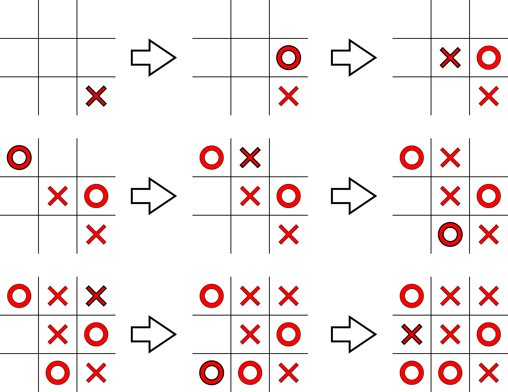

Explicación
El juego de Gato o tres en línea es un juego que se realiza entre dos jugadores, donde cada jugador tiene asignado un símbolo diferente (generalmente ❌ y ⭕). Se marcan espacios sobre un tablero de 3×3 cuadritos, tomando turnos alternados. El juego termina cuando alguno de los jugadores coloca tres de sus símbolos alineados, o ya no hay espacios vacíos en el tablero.
>